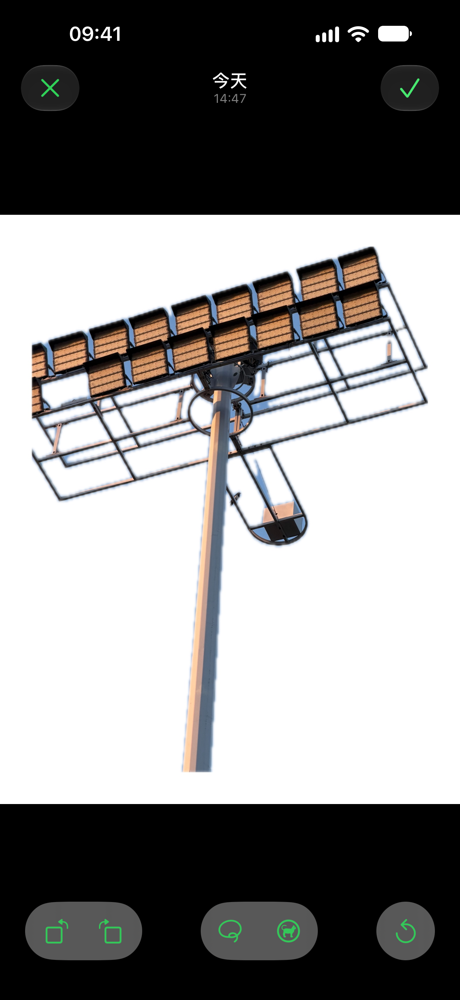
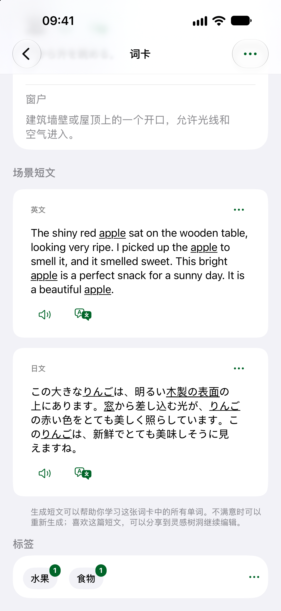
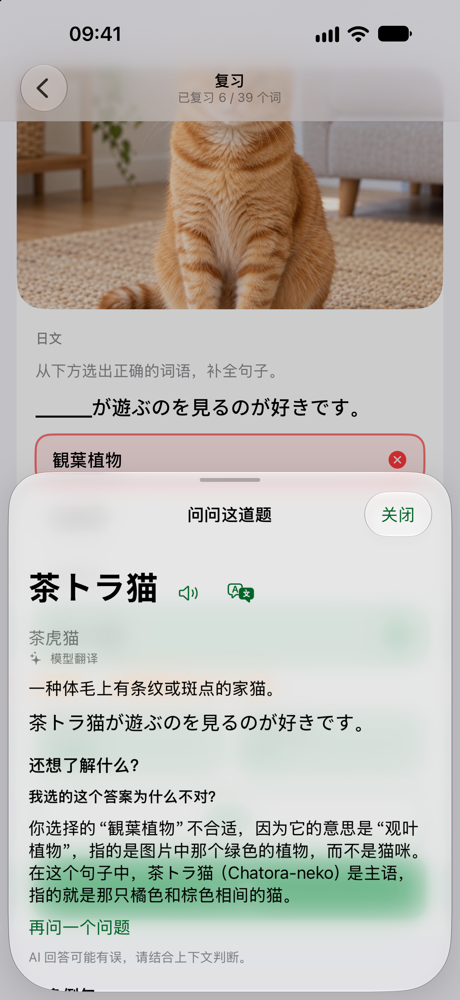
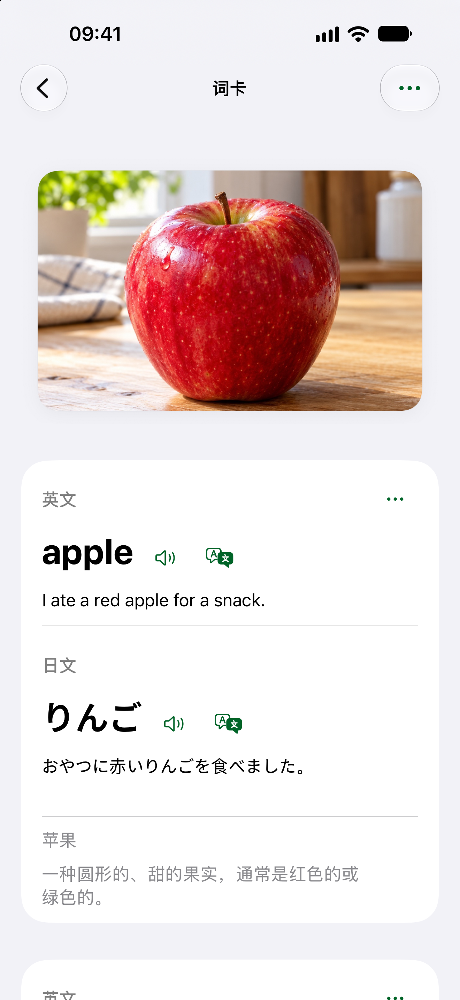
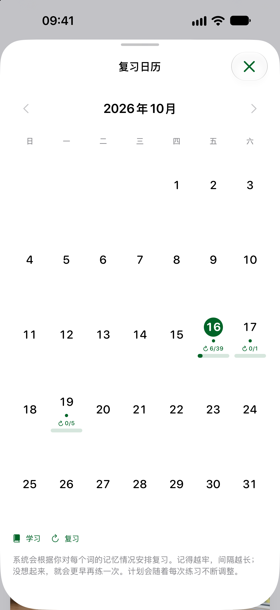

免费使用
¥0 / $0无需订阅，保留和管理已保存词卡
- 查看、编辑已保存的词卡与生成内容
- 查看学习记录、复习历史与统计
- 使用 iCloud 备份、本地导入和导出
拍下眼前的生活场景，把照片中的事物变成多语词卡和场景短文，在真实语境里积累表达。

拍下身边的画面，立刻看到地道例句与多词串联的场景短文；复习答题后还能随时看句子讲解、译文与更多例句。
随手拍下早餐、街景与桌边小物，自动抠出透明贴纸，还能一键把场景图与短文送入灵感树洞写下你的故事。
多选你想学的语种、单选你最习惯的解释语种，在一张照片里同时掌握英、日、中表达，各自拥有独立记忆曲线。
别再死记孤立的考纲词表了。从你每天置身的生活画面出发，听例句、读短文、看解析，把「书本上的词」真正变成「你嘴边的表达」：


最好的外语素材不在考卷里，而在你每天喝的咖啡、逛的街角和喜爱的器物中。用你自己的生活学外语，每次开口都有真实故事可讲：
想同时把英语和日语捡起来，却总在不同词典和背词软件里重复折腾？在同一个生活画面里，一次拍下就能同步积累多门语言：


免费使用仅可管理已保存内容；今日新词学习、复习和新的本地 AI 学习内容由高级会员解锁。会员到期后，已保存内容仍可查看和编辑。
无需订阅，保留和管理已保存词卡
包含免费使用的全部能力，另解锁：
具体价格以 App Store 购买页面为准
符合 Apple 试用资格时，可享 7 天免费试用
试用后按月自动续订；可在 Apple 账户设置中取消。
具体价格以 App Store 购买页面为准
符合 Apple 试用资格时，可享 1 个月免费试用
年付优惠与试用资格以 App Store 购买页面为准。
试用后按年自动续订；可在 Apple 账户设置中取消。
一次性价格以 App Store 购买页面为准
一次购买，永久解锁高级会员权益
一次性付款，不会自动续费。
价格因 App Store 国家或地区而异。购买前，App Store 会显示适用于你账户的本地价格、税费、试用资格和续订条件。月度与年度方案属于同一订阅组，每位用户只能兑换一次 Apple 提供的订阅试用优惠。网站不提供购买或网页结账。
五个核心画面，陪你把眼前的生活一步步变成能听、能读、能聊的多语词库。
无需注册账号。照片、词卡与学习记录默认保存在设备本地；你可以按需使用 iCloud 备份或导出。
高级会员可在会员有效期内不限生成次数使用设备端 E4B，生成词条、场景短文和复习讲解，不按次收费。AI 在本机处理照片，不会把照片上传到 AI 云端服务；照片和词卡默认保存在设备上。模型或系统语言资源下载、iCloud 备份、App Store 购买及主动分享仍会连接相应服务。
可开启 iCloud 自动备份，也可导出完整备份文件并在需要时导入恢复。备份状态取决于 iCloud 账户、网络和可用空间。
照片、词卡和复习记录保存在你的设备与个人备份中，可继续查看和导出。